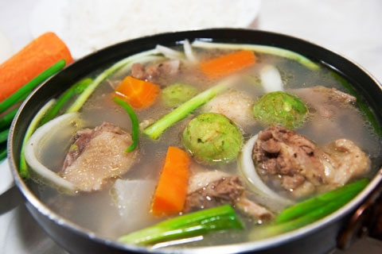

Chi Tiết Sản Phẩm
Canh sấu nấu sườn
Món canh sườn nấu sấu nổi bật bởi vị chua thanh, dễ ăn của những quả sấu làm giảm đi cảm giác oi bức ngày hè. Cách làm món canh sườn nấu sấu chua rất đơn giản, bạn có thể tham khảo công thức trong bài viết dưới đây.